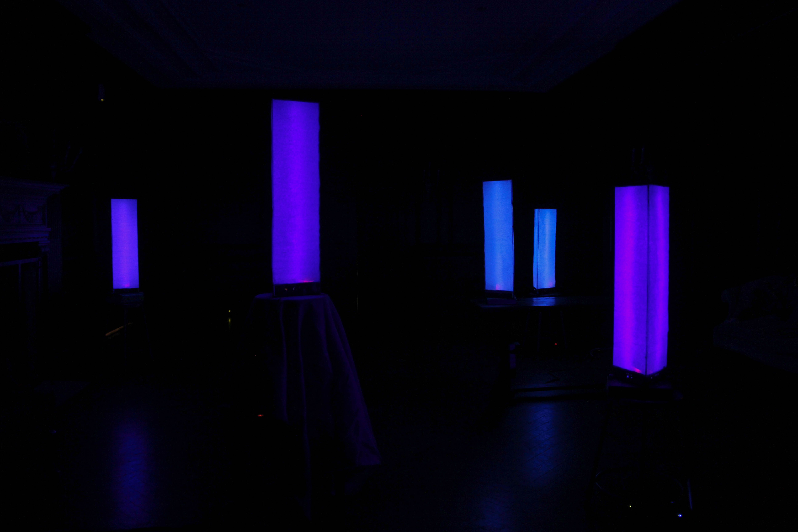
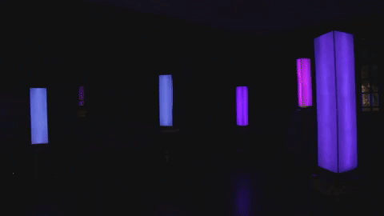

Members of Brown cyberSTEAM designed and built the Lantern Village exhibition over the course of 2017's Spring Semester.
The series of five one-meter-tall "smart-lanterns" was first shown to the public in May 2017 at a preview show in Brown University's Machado House.
 cyberSTEAM
cyberSTEAM LANTERN VILLAGE
THE SHOW


The lanterns turn green in reaction to noise, and pink when visitors get up close.
CONCEPT
Our goal was to use lights to create a playful, interactive, and visually impactful environment. We tried prototyping a bunch of different ideas - grids of LEDs, projections on tarps suspended from the ceiling, and arduino-controlled strips of lights.
Eventually we decided to build a series of tiny lanterns - small points of light in a large dark space.
Then the lanterns became bigger. Then we added some sensors.
And then our lights came to life.
We named our first lantern Mark - short for "Mark I". Mark was surprisingly human-like. Its only ability to interact with people came through its two "senses" - sight and sound. Mark could change color depending on your proximity, it could react to noises and music, but that was all. When we stripped it of all other defining "human" characteristics - eyes, a face, a human voice - Mark was clearly more machine than organism.
But was Mark alive?
The skeleton of the lantern is a meter-high triangular prism made from wood.
Pieces of different shapes were lasercut to the exact dimensions necessary.